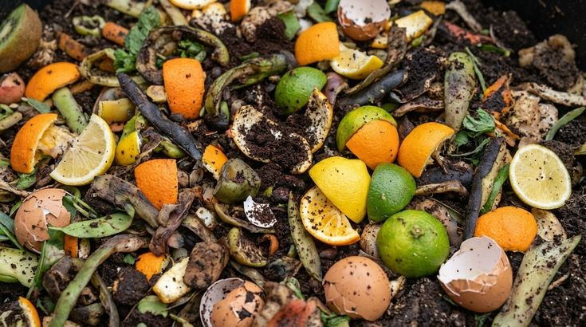
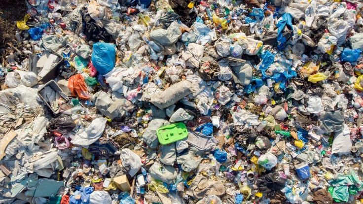

Kenali dan Pilah Sampahmu
Memilah sampah dari sumbernya adalah aksi nyata untuk menciptakan lingkungan yang bersih dan sehat. Pelajari empat kategori utama sampah rumah tangga untuk memudahkan proses daur ulang.
Sampah Organik
Deskripsi: Material alami yang mudah membusuk.
Contoh:
Sisa makanan, dedaunan, dan tulang (bisa dijadikan kompos).
Waktu
Terurai: Sangat cepat (2-6 minggu untuk sisa makanan, hingga
beberapa bulan untuk ranting/tulang).
Sampah Anorganik
Deskripsi: Material buatan manusia yang bernilai ekonomis untuk
didaur ulang.
Contoh: Botol plastik, kertas, dan kaleng
(harus bersih dan kering).
Waktu Terurai: Sangat lama
(Plastik 100-500 tahun, kaleng aluminium 50-200 tahun, dan kaca
jutaan tahun).
Sampah B3
Deskripsi: Limbah yang mengandung zat kimia berbahaya dan
beracun.
Contoh: Baterai bekas, lampu neon, kaleng
aerosol, dan obat kedaluwarsa.
Waktu Terurai: Sulit
terurai secara alami. Racunnya dapat mencemari lingkungan hingga
ratusan tahun.
Sampah Residu
Deskripsi: Sampah sisa yang belum memiliki teknologi pengolahan
massal.
Contoh: Popok, pembalut, puntung rokok, dan
kemasan saset.
Waktu Terurai: Sangat lama (200–500 tahun)
dan dapat menjadi mikroplastik yang mencemari lingkungan.

